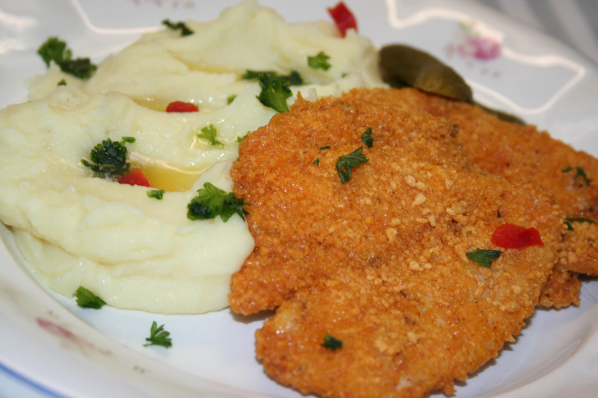

Kureci rizek s bramborovou kasi

Description
A recipe for the traditional Czech meal consisting of a (deep) fried chicken breast.
Typically served with mashed potatoes or potato salad.
Ingredients (Rizek)
- 500 g of chicken (breasts, alternatively thighs)
- Salt
- Ground pepper
- Finely ground flour (US/Canada equivalent all-purpose flour, UK plain flour)
- Breadcrumbs
- 2 eggs
- 100 ml of milk
- Frying oil
Steps - rizek
- Cut the meat into slices and tenderize them lightly.
- Salt and pepper the slices from both sides.
- Prepare 3 soup plates/bowls
- Pour the flour in the first one.
- Crack the two eggs into the second one, add a dash of salt and pepper, milk, and properly mix everything.
- Put the breadcrumbs in the last one.
- Coat the meat slices thoroughly in the first plate/bowl, then in the second one and lastly in the third one.
- Pour sufficient amount of oil on a frying pan and fry the coated slices until golden brown.
- Serve with mashed potatoes or potato salad.